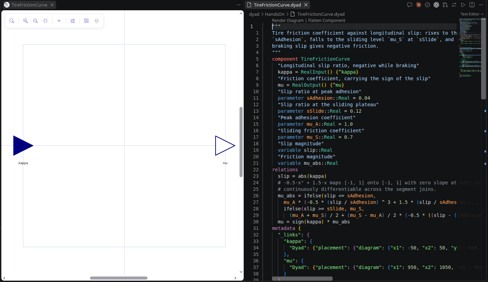

Part 1 introduces Dyad Studio: what the extension adds to VS Code, where
its controls are, and how a diagram and its code are one model. Part 2 builds
the longitudinal car of notebook 01 from standard-library parts, one component per step, mostly
in the diagram editor. At the end of step 5 your car reaches the same terminal speed as the
course model Vehicle.CarPlant; step 6 gives its wheel inertia; steps 7–10 add
equations of your own and end with the car spinning its wheel on a slippery road.
Every component here exists in the course repository under
dyad/HandsOn/, and every number in a checkpoint was read off a run of it.
The budgets add up to 155 minutes: 30 for Part 1 and 125 for Part 2.
Part 1 — Dyad Studio and the extension
What the tool is, where its controls are · 30 min
What you are looking at 10 min
Dyad Studio is a VS Code extension: you draw or write models in the Dyad language, and it compiles them to Julia and simulates them.
Three ideas
- A library is a folder. Your models live as
.dyadfiles underdyad/. The extension compiles them into Julia undergenerated/— never edit that folder by hand; it is rewritten on every compile. The folder is also a Julia package, sousing MyCarloads your models in a Julia REPL. - A component is a model; an analysis is an experiment on one. A component says what the system is — parts, wires, equations. An analysis says what to do with it — for example simulate for 300 s. You can only simulate a component whose inputs are all driven, so every experiment gets a small test bench component around the thing you built.
- Diagram and code are the same file. Every block you place is a line of code,
every wire a
connect. Step 01 shows it.
Where things are


Dyad holds the ports (RealInput, Spline, Flange); your own library is at the bottom. The sliders button next to it is Edit Parameters.- The Dyad sidebar (the Dyad icon in the activity bar) holds four panels: Actions, Components, Analyses and Notebooks. The Actions title bar has Dyad: Open Julia REPL, which you need for plotting.
- Saving a
.dyadfile compiles it. If the Analyses panel does not pick up a change, click Dyad Compile under Julia Commands, beside the terminal. - Results of a run appear in a Julia Plots pane.
Create your library 10 min
An empty library of your own, with the standard libraries downloaded, so that step 01 can start placing parts.
Do this
- In VS Code, press Ctrl+Shift+P. A text box opens at the top of the window: the command palette.
- Type
Dyad: Create Component Libraryand press Enter when it is highlighted. - When asked for a name, type
MyCarand press Enter. When asked for a location, pick an empty folder. VS Code reopens in that folder. - Look at the terminal at the bottom of the window. The extension runs
Pkg.instantiate()by itself; the first time it downloads and precompiles the standard libraries, which takes several minutes. Wait until it stops printing. If you can, do this step before the session. - In the Activity Bar — the column of icons on the far left — click the Dyad icon. The Dyad sidebar opens with four panels: Actions, Components, Analyses, Notebooks (arrows 1 and 2 in the map above).
- In Components, click the arrow next to
MyCarto expand it. It holds the example models the template ships with; leave them, they do no harm.
The terminal has finished instantiating without errors, and MyCar appears in the Components panel.
Names in this guide are the ones the reference models use. Keep them:
the checkpoints name signals such as car.v_kmh, and a different instance name
means a different signal name.
01 Tour: one model, two views 10 min
Place two blocks, wire them, set a parameter, and see that the diagram and the code are the same model.
Parts
| Name | Library path | Set |
|---|---|---|
delay | BlockComponents › Nonlinear › PadeDelay | n = 6, m = 5, delayTime = 0.3 |
lag | BlockComponents › Continuous › FirstOrder | T = 0.3 |
What you are building

component, the wire is the one connect under relations, and the values in the parameter panel are the arguments in parentheses.Do this
- Create the component. In the Components panel, right-click
MyCar→ Add Component. TypeEngineand press Enter. An empty white canvas opens: the diagram editor, with a small toolbar in its top-left corner. - Place the first part. In that toolbar, click + (Add component, the fifth icon — see the second picture in Where things are). A search box opens above a list of libraries. Type
PadeDelayand click the result,BlockComponents › Nonlinear › PadeDelay. A block with a sine-wave icon appears on the canvas. - Name it. Click the block once. A panel opens on the right of the canvas with the block's name at the top and a pencil ✎ beside it. Click the pencil, type
delay, press Enter. - Set its parameters. In the same panel, under Parameters, click into the
nfield and type6;m→5;delayTime→0.3. Leave the rest. Close the panel with its ✕. - Place the second part. Click + again, search
FirstOrder, clickBlockComponents › Continuous › FirstOrder. Click the new block, rename itlagwith the pencil, setTto0.3. - Move the blocks so
lagsits to the right ofdelay: press on a block and drag it. - Wire them. Each block has a small port on its right edge (the output,
y) and one on its left edge (the input,u). Press ondelay's right-hand port, hold, drag tolag's left-hand port, release. A line joins them. - Save with Ctrl+S.
- Switch to code. In the editor's title bar — the row with the file's tab, top right — click ⇄ (Toggle Between Code and Diagram View, arrow 4 in the map). Every block you placed is now a line
name = Library.Path(parameters), and the wire is aconnect(delay.y, lag.u)line underrelations. - Round trip. In the code, change
T = 0.3toT = 0.5, save, click ⇄ again, clicklag: its panel shows 0.5. Set it back to 0.3. One model, two views — whichever you edit, the other follows.
The code view shows the two declarations and one connect(delay.y, lag.u), matching the code half of the screenshot above. Keep this component open: step 2 finishes it.
Stuck? The full model
From dyad/HandsOn/Tour.dyad, diagram annotations omitted. Yours is called Engine; the reference copy is Tour only so it can sit next to the finished Engine of step 2.
"""
Step 1 of the hands-on: two blocks and one wire, to show that the diagram and the code are the
same model. The delay's input is left open; step 2 finishes this into `Engine`.
"""
component Tour
delay = BlockComponents.Nonlinear.PadeDelay(n = 6, m = 5, delayTime = 0.3)
lag = BlockComponents.Continuous.FirstOrder(T = 0.3)
relations
connect(delay.y, lag.u)
endPart 2 — Build the car
Steps 2–10 · one component per step · 125 min
02 Engine 20 min
Finish the engine — torque command in, shaft torque out through a delay, a lag and a 150 N·m ceiling — and watch it answer a step.
Parameters
| Name | Type | Value | Meaning |
|---|---|---|---|
theta_e | Time | 0.3 | Injection-to-torque transport delay |
tau_e | Time | 0.3 | Manifold-filling first-order lag |
T_max | Torque | 150 | Peak deliverable torque |
Parts
| Name | Library path | Set |
|---|---|---|
tau_cmd | Dyad › RealInput | port, left edge |
spline | Dyad › Spline | port, right edge — the output shaft |
support | Dyad › Spline | port, bottom edge — the engine mounts |
delay | BlockComponents › Nonlinear › PadeDelay | n = 6, m = 5, delayTime = theta_e |
lag | BlockComponents › Continuous › FirstOrder | T = tau_e |
limiter | BlockComponents › Nonlinear › Limiter | y_max = T_max, y_min = 0 |
torque | RotationalComponents › Sources › TorqueSource | — |
Test bench EngineStep:
| Name | Library path | Set |
|---|---|---|
cmd | BlockComponents › Sources › Step | height = 200, offset = 0, start_time = 0.5 |
engine | your Engine | — |
load | RotationalComponents › Components › Inertia | J = 1 |
mounts | RotationalComponents › Components › Fixed | — |
What you are building

cmd steps the torque command above the ceiling, load is a 1 kg·m² inertia, and EngineStepTransient at the bottom of the code runs it for 3 s.
Do this
- Name each value once. A number a part needs becomes a parameter of
Engine, and the part refers to it by name — soEngine(T_max = 200)later changes the ceiling everywhere it is used. Click an empty spot of the canvas and use Add parameter in the component panel for each row of the parameters table, or toggle to code (⇄) and paste them aboverelations:ParametersThen give the parts the names, not the numbers — the parts table shows which."Injection-to-torque transport delay" structural parameter theta_e::Time = 0.3 "Manifold-filling first-order lag" parameter tau_e::Time = 0.3 "Peak deliverable torque" parameter T_max::Torque = 150 - Click
delayand changedelayTimefrom0.3totheta_e; clicklagand changeTtotau_e. The fields accept names as well as numbers. - With +, place
BlockComponents › Nonlinear › Limiter(rename itlimiter) andRotationalComponents › Sources › TorqueSource(rename ittorque), to the right oflag. Wirelag's output tolimiter's input, andlimiter's output to thetauport oftorque. - Ports are parts too. Click + and open the
Dyadlibrary at the top of the list: place aRealInputand rename ittau_cmd, then twoSplines renamedsplineandsupport. Dragtau_cmdto the left edge of the thin blue rectangle,splineto the right edge,supportto the bottom: that rectangle is the component's outline, and ports on it are what others connect to. Wiretau_cmd → delay.u,torque.spline → spline(the gray circle on the right oftorque) andtorque.support → support(the one underneath). - Set the limiter to
y_max = T_max,y_min = 0: the engine cannot brake through this path.theta_eis astructuralparameter becausePadeDelaybuilds its coefficients from the delay when the model is compiled; if Add parameter offers no structural option, paste that line in code. - An engine with an unconnected input cannot be simulated, so build a test bench. Add Component
EngineStep, place yourEngine(underMyCarin the + palette), and addcmd,loadandmounts. Wire it as in the screenshot above. - Switch to code now, because two things have no diagram form. First, the starting state: below
relations, add the threeinitiallines of the complete bench below. Second, the analysis: it says what to do with a model, not what the model is, so it is written as code. Add theanalysisblock. Save; it appears in the Analyses panel. If it does not, click Dyad Compile under Julia Commands, beside the terminal: auto-compile on save can be switched off. - Run
EngineStepTransientwith the ▷ beside it in the Analyses panel, then plotengine.limiter.y. A plainplotof the result draws every state at once, including the six internal states of the delay, which swing into the thousands and hide everything else. Pick the one signal by name in the Julia REPL:The same pattern plots several signals,using MyCar, Plots r = MyCar.EngineStepTransient() plot(r; idxs = r."engine.limiter.y")idxs = [r."a", r."b"], or one against another,idxs = (r."x", r."y").
The complete bench and its analysis. Add what your file is missing — the initial lines and the analysis — or replace the whole file with this (the diagram then lays itself out afresh).
component EngineStep
cmd = BlockComponents.Sources.Step(height = 200, offset = 0, start_time = 0.5)
engine = Engine()
"Unit inertia, so its angular acceleration reads as the delivered torque"
load = RotationalComponents.Components.Inertia(J = 1)
mounts = RotationalComponents.Components.Fixed()
relations
connect(cmd.y, engine.tau_cmd)
connect(engine.spline, load.spline_a)
connect(engine.support, mounts.spline)
initial engine.lag.x = 0
initial load.phi = 0
initial load.w = 0
end
analysis EngineStepTransient
extends TransientAnalysis(stop = 3)
model = EngineStep()
endMeasured on HandsOn.EngineStepTransient:
engine.limiter.ystays at 0 through the step at 0.5 s, reads only 6.2 N·m at 0.8 s, 97.5 N·m at 1.0 s, clips at 150 N·m at 1.22 s and stays there.engine.delay.yreads 208.1 at 0.9 s before settling at 200: the Padé approximation of the delay overshoots. The limiter hides it.load.wends at 306.0 rad/s at 3 s.
Stuck? The full model
From dyad/HandsOn/Engine.dyad,
copied from the source, except that each metadata { … } block — diagram layout and
test cases — is left out. The {^…} tags that point into that layout are dropped too; the diagram editor writes its own when you draw. In the reference library these models sit in a sub-library called
HandsOn; in yours they sit at the top level, and the code is the same.
"""
Torque command in, shaft torque out, through a transport delay, a first-order lag and a torque
ceiling.
"""
component Engine
"Commanded torque"
tau_cmd = RealInput()
"Output shaft"
spline = Spline()
"Engine mounts"
support = Spline()
# m = n - 1 leaves the delay without direct feedthrough, so a command step cannot leak through
# the limiter before the delay has elapsed.
delay = BlockComponents.Nonlinear.PadeDelay(n = 6, m = 5, delayTime = theta_e)
lag = BlockComponents.Continuous.FirstOrder(T = tau_e)
limiter = BlockComponents.Nonlinear.Limiter(y_max = T_max, y_min = 0)
torque = RotationalComponents.Sources.TorqueSource()
# Structural because PadeDelay builds its coefficients from the delay when it is compiled.
"Injection-to-torque transport delay"
structural parameter theta_e::Time = 0.3
"Manifold-filling first-order lag"
parameter tau_e::Time = 0.3
"Peak deliverable torque"
parameter T_max::Torque = 150
relations
connect(tau_cmd, delay.u)
connect(delay.y, lag.u)
connect(lag.y, limiter.u)
connect(limiter.y, torque.tau)
connect(torque.spline, spline)
connect(torque.support, support)
end
"""A torque command above the ceiling, stepped in at 0.5 s, into a 1 kg·m² flywheel."""
component EngineStep
cmd = BlockComponents.Sources.Step(height = 200, offset = 0, start_time = 0.5)
engine = Engine()
"Unit inertia, so its angular acceleration reads as the delivered torque"
load = RotationalComponents.Components.Inertia(J = 1)
mounts = RotationalComponents.Components.Fixed()
relations
connect(cmd.y, engine.tau_cmd)
connect(engine.spline, load.spline_a)
connect(engine.support, mounts.spline)
initial engine.lag.x = 0
initial load.phi = 0
initial load.w = 0
end
analysis EngineStepTransient
extends TransientAnalysis(stop = 3)
model = EngineStep()
end03 Driveline 10 min
Turn engine torque into a force on the car: a 4:1 gear and a 0.31 m rolling wheel.
Parameters
| Name | Type | Value | Meaning |
|---|---|---|---|
i | Real | 4.0 | Gear ratio |
r | Length | 0.31 | Wheel rolling radius |
Parts
| Name | Library path | Set |
|---|---|---|
spline | Dyad › Spline | port — from the engine |
support_r | Dyad › Spline | port — gearbox housing |
flange | Dyad › Flange | port — to the body |
support_t | Dyad › Flange | port — the road |
gear | RotationalComponents › Components › IdealGear | ratio = i |
wheel | RotationalComponents › Components › IdealRollingWheel | radius = r |
What you are building

Driveline. Rotational ports are gray circles and translational ports are green squares: the rolling wheel is where one becomes the other.Do this
- Add the two parameters. Click an empty spot of the canvas and use Add parameter in the component panel for each row of the parameters table, or toggle to code (⇄) and paste them above
relations:ParametersThen give the parts the names, not the numbers — the parts table shows which."Gear ratio" parameter i::Real = 4.0 "Wheel rolling radius" parameter r::Length = 0.31 - Create
Driveline. Placegearandwheeland wiregear.spline_b → wheel.spline. - Add the four ports. Wire
spline → gear.spline_aandwheel.flange → flange. - Both reaction paths go out of the component: wire
gear.supportandwheel.support_rtosupport_r, andwheel.support_ttosupport_t. The car will ground them. - Set
ratio = iandradius = r. The force at the flange is thenT · i / r, the formula from notebook 01.
It saves without errors and has the four ports named in the table. Under 100 N·m into spline and 1400 kg on flange, the reference test TestDriveline accelerates the mass at 0.9217 m/s² (100 · 4 / 0.31 / 1400).
Stuck? The full model
From dyad/HandsOn/Driveline.dyad,
copied from the source, except that each metadata { … } block — diagram layout and
test cases — is left out, and so is the test component. The {^…} tags that point into that layout are dropped too; the diagram editor writes its own when you draw. In the reference library these models sit in a sub-library called
HandsOn; in yours they sit at the top level, and the code is the same.
"""Gearbox and rolling wheel: engine shaft in, tractive force on the body out."""
component Driveline
"From the engine"
spline = Spline()
"Gearbox housing"
support_r = Spline()
"To the body"
flange = Flange()
"Road"
support_t = Flange()
gear = RotationalComponents.Components.IdealGear(ratio = i)
wheel = RotationalComponents.Components.IdealRollingWheel(radius = r)
"Gear ratio"
parameter i::Real = 4.0
"Wheel rolling radius"
parameter r::Length = 0.31
relations
connect(spline, gear.spline_a)
connect(gear.spline_b, wheel.spline)
connect(wheel.flange, flange)
connect(gear.support, support_r)
connect(wheel.support_r, support_r)
connect(wheel.support_t, support_t)
end04 Body 15 min
Give the car its 1400 kg and the two forces that hold it back on a flat road: drag and rolling resistance.
Parameters
| Name | Type | Value | Meaning |
|---|---|---|---|
m | Dyad.Mass | 1400 | Vehicle mass |
CdA | Area | 0.63 | Aerodynamic drag area, Cd * A |
rho | Density | 1.2 | Air density |
f_r | Real | 0.012 | Rolling resistance coefficient |
g | Acceleration | 9.80665 | Gravitational acceleration |
v_nominal | Velocity | 30 | Speed at which the drag force is specified |
Parts
| Name | Library path | Set |
|---|---|---|
flange | Dyad › Flange | port — tractive force in |
mass | TranslationalComponents › Components › Mass | m = m |
drag | TranslationalComponents › Sources › QuadraticSpeedDependentForce | ForceDirection = false, v_nominal = v_nominal, f_nominal = -0.5 * rho * CdA * v_nominal ^ 2 |
rolling | TranslationalComponents › Components › RollingResistance | fWeight = m * g |
cr_const | BlockComponents › Sources › Constant | k = f_r |
incl_const | BlockComponents › Sources › Constant | k = 0 — flat road |
ground | TranslationalComponents › Components › Fixed | — |
What you are building

Body. Both Constant blocks feed rolling: one is the rolling coefficient, the other the flat-road inclination.Do this
- Add the six parameters.
mfeeds two parts andrho,CdA,v_nominalcombine into one: naming them is what keeps those uses in step. Click an empty spot of the canvas and use Add parameter in the component panel for each row of the parameters table, or toggle to code (⇄) and paste them aboverelations:ParametersThen give the parts the names, not the numbers — the parts table shows which."Vehicle mass" parameter m::Dyad.Mass = 1400 "Aerodynamic drag area, Cd * A" parameter CdA::Area = 0.63 "Air density" parameter rho::Density = 1.2 "Rolling resistance coefficient" parameter f_r::Real = 0.012 "Gravitational acceleration" parameter g::Acceleration = 9.80665 "Speed at which the drag force is specified" parameter v_nominal::Velocity = 30 - Create
Body. Place the parts and wire the three forces —flange,drag.flange,rolling.flange— tomass.flange_a. - Wire
drag.supportandrolling.supporttoground.flange: drag and rolling resistance push against the road and the air, not against the car. - Feed
rollingits two signal inputs:cr_const.y → rolling.crandincl_const.y → rolling.inclination. An unconnected input would leave the model incomplete. - Set the drag parameters.
f_nominalis negative, which makes the source a load;ForceDirection = falsemakes drag oppose motion both ways.-0.5 * rho * CdA * v_nominal ^ 2is ½ρ·CdA·v² at the nominal speed, written in the parameters' names.
It saves without errors. Under a constant 500 N the reference test TestBody starts at 0.357 m/s² and settles at 29.78 m/s, where drag and rolling resistance add up to 500 N.
Stuck? The full model
From dyad/HandsOn/Body.dyad,
copied from the source, except that each metadata { … } block — diagram layout and
test cases — is left out, and so is the test component. The {^…} tags that point into that layout are dropped too; the diagram editor writes its own when you draw. In the reference library these models sit in a sub-library called
HandsOn; in yours they sit at the top level, and the code is the same.
"""
Car body on a flat road: tractive force in at the flange, resisted by aerodynamic drag and rolling
resistance.
"""
component Body
"Tractive force from the driveline"
flange = Flange()
mass = TranslationalComponents.Components.Mass(m = m)
# A negative nominal force makes the source a load; ForceDirection = false gives the v*|v| form,
# so drag opposes motion in both directions.
drag = TranslationalComponents.Sources.QuadraticSpeedDependentForce(ForceDirection = false, v_nominal = v_nominal, f_nominal = -0.5 * rho * CdA * v_nominal ^ 2)
rolling = TranslationalComponents.Components.RollingResistance(fWeight = m * g)
cr_const = BlockComponents.Sources.Constant(k = f_r)
"Flat road: tan(alpha) = 0"
incl_const = BlockComponents.Sources.Constant(k = 0)
ground = TranslationalComponents.Components.Fixed()
"Vehicle mass"
parameter m::Dyad.Mass = 1400
"Aerodynamic drag area, Cd * A"
parameter CdA::Area = 0.63
"Air density"
parameter rho::Density = 1.2
"Rolling resistance coefficient"
parameter f_r::Real = 0.012
"Gravitational acceleration"
parameter g::Acceleration = 9.80665
"Speed at which the drag force is specified"
parameter v_nominal::Velocity = 30
relations
connect(flange, mass.flange_a)
connect(drag.flange, mass.flange_a)
connect(rolling.flange, mass.flange_a)
connect(drag.support, ground.flange)
connect(rolling.support, ground.flange)
connect(cr_const.y, rolling.cr)
connect(incl_const.y, rolling.inclination)
end05 Car: full throttle to terminal speed 20 min
Assemble engine, driveline and body into the car of notebook 01 and drive it flat out from rest until it stops getting faster.
Parts
| Name | Library path | Set |
|---|---|---|
tau_cmd | Dyad › RealInput | port |
v_kmh | Dyad › RealOutput | port |
engine | your Engine | — |
driveline | your Driveline | — |
body | your Body | — |
vsensor | TranslationalComponents › Sensors › VelocitySensor | — |
to_kmh | BlockComponents › Math › Gain | k = 3.6 |
rot_ground | RotationalComponents › Components › Fixed | — |
trans_ground | TranslationalComponents › Components › Fixed | — |
Test bench CarFullThrottle:
| Name | Library path | Set |
|---|---|---|
cmd | BlockComponents › Sources › Constant | k = 150 — the torque ceiling |
car | your Car | — |
What you are building

Car. The sensor reads the body's speed in m/s and the k = 3.6 gain turns it into km/h.
Do this
- Create
Car. Drop in your three components and wireengine.spline → driveline.splineanddriveline.flange → body.flange. - Ground the reactions:
engine.supportanddriveline.support_rtorot_ground,driveline.support_ttotrans_ground. - Measure:
vsensor.flangeonbody.flange, thenvsensor.v → to_kmh.u. The sensor gives m/s; the gain of 3.6 makes it km/h. - Add the ports:
tau_cmd → engine.tau_cmd,to_kmh.y → v_kmh. - Build the test bench: in the Components panel, right-click your library → Add Component, call it
CarFullThrottle. With +, place yourCar(underMyCar) ascarand aBlockComponents › Sources › Constantascmdwithk = 150. Wirecmd.y → car.tau_cmd. - Toggle to code (⇄). Add the three
initiallines of the complete bench below at the end ofrelations, and paste theanalysisblock after the component'send. Save:CarFullThrottleTransientappears in the Analyses panel. The car needs its position fixed at the start as well as its speed; withoutcar.body.mass.sthe model has no unique initial state. - Run it with the ▷ beside it in the Analyses panel. Then, in the Julia REPL (Dyad: Open Julia REPL in the Actions title bar), plot the speed:
using MyCar, Plots r = MyCar.CarFullThrottleTransient() plot(r; idxs = r."car.v_kmh")
The complete bench and its analysis. Add what your file is missing — the initial lines and the analysis — or replace the whole file with this (the diagram then lays itself out afresh).
component CarFullThrottle
"Full throttle: the engine's 150 N·m ceiling"
cmd = BlockComponents.Sources.Constant(k = 150)
car = Car()
relations
connect(cmd.y, car.tau_cmd)
initial car.body.mass.s = 0
initial car.body.mass.v = 0
initial car.engine.lag.x = 0
end
analysis CarFullThrottleTransient
extends TransientAnalysis(stop = 300)
model = CarFullThrottle()
endMeasured on HandsOn.CarFullThrottleTransient: 21.2 km/h at 5 s,
43.6 km/h at 10 s, 100 km/h at 23.6 s, 197.5 km/h at 60 s, 99 % of the final speed at 143 s and
246.39 km/h at 300 s. The curve is a first-order rise: steep at first, then
flattening as drag grows with the square of speed.
Same check against the course model: Vehicle.CarPlant at full torque reads
246.39 km/h at 300 s, and the two agree to 0.0001 km/h at 800 s (246.3957 km/h). Your car is
the notebook's car.
Stuck? The full model
From dyad/HandsOn/Car.dyad,
copied from the source, except that each metadata { … } block — diagram layout and
test cases — is left out. The {^…} tags that point into that layout are dropped too; the diagram editor writes its own when you draw. In the reference library these models sit in a sub-library called
HandsOn; in yours they sit at the top level, and the code is the same.
"""
Longitudinal car on a flat road: torque command in, speed in km/h out.
"""
component Car
"Commanded engine torque"
tau_cmd = RealInput()
"Vehicle speed in km/h"
v_kmh = RealOutput()
engine = Engine()
driveline = Driveline()
body = Body()
vsensor = TranslationalComponents.Sensors.VelocitySensor()
to_kmh = BlockComponents.Math.Gain(k = 3.6)
"Engine mounts and gearbox housing"
rot_ground = RotationalComponents.Components.Fixed()
"Road under the wheel"
trans_ground = TranslationalComponents.Components.Fixed()
relations
connect(tau_cmd, engine.tau_cmd)
connect(engine.spline, driveline.spline)
connect(engine.support, rot_ground.spline)
connect(driveline.support_r, rot_ground.spline)
connect(driveline.flange, body.flange)
connect(driveline.support_t, trans_ground.flange)
connect(vsensor.flange, body.flange)
connect(vsensor.v, to_kmh.u)
connect(to_kmh.y, v_kmh)
end
"""Full throttle from rest on a flat road, run to terminal speed."""
component CarFullThrottle
"Full throttle: the engine's 150 N·m ceiling"
cmd = BlockComponents.Sources.Constant(k = 150)
car = Car()
relations
connect(cmd.y, car.tau_cmd)
initial car.body.mass.s = 0
initial car.body.mass.v = 0
initial car.engine.lag.x = 0
end
analysis CarFullThrottleTransient
extends TransientAnalysis(stop = 300)
model = CarFullThrottle()
end06 A wheel with inertia 10 min
Put a 1 kg·m² road wheel between the gear and the rolling contact, and see how little it changes.
Parts
| Name | Library path | Set |
|---|---|---|
inertia | RotationalComponents › Components › Inertia | J = J_w |
(the rest) | as in Driveline | — |
WheeledCar is Car with driveline swapped for WheeledDriveline; its test bench WheeledCarFullThrottle also needs initial car.driveline.inertia.phi = 0.
What you are building

inertia sits between gear and wheel.
Do this
- In the Components panel, right-click
Driveline→ Duplicate, and call the copyWheeledDriveline. - Delete the wire
gear.spline_b → wheel.spline, placeinertiabetween them and wiregear.spline_b → inertia.spline_a,inertia.spline_b → wheel.spline. Add the parameterJ_w(MomentOfInertia, 1.0) next to theiandrthe copy already has, and setJ = J_w. - Duplicate
CarasWheeledCarand, in its diagram, replace itsdrivelinewith aWheeledDriveline. The ports are the same, so the wires stay. - Duplicate
CarFullThrottleasWheeledCarFullThrottle, and in its diagram swapcarfor aWheeledCar. Toggle to code: the wheel now has a state of its own, so add itsinitialline, and paste the analysis afterend:The complete bench and its analysis. Add what your file is missing — the
initiallines and theanalysis— or replace the whole file with this (the diagram then lays itself out afresh).WheeledCarFullThrottle and WheeledCarFullThrottleTransientcomponent WheeledCarFullThrottle "Full throttle: the engine's 150 N·m ceiling" cmd = BlockComponents.Sources.Constant(k = 150) car = WheeledCar() relations connect(cmd.y, car.tau_cmd) initial car.body.mass.s = 0 initial car.body.mass.v = 0 initial car.engine.lag.x = 0 initial car.driveline.inertia.phi = 0 end analysis WheeledCarFullThrottleTransient extends TransientAnalysis(stop = 300) model = WheeledCarFullThrottle() end - Run
WheeledCarFullThrottleTransientfrom the Analyses panel, then plot it over step 5's curve in the Julia REPL:using MyCar, Plots a = MyCar.CarFullThrottleTransient() b = MyCar.WheeledCarFullThrottleTransient() p = plot(a; idxs = a."car.v_kmh", label = "Car") plot!(p, b; idxs = b."car.v_kmh", label = "WheeledCar")
Measured on HandsOn.WheeledCarFullThrottleTransient: 43.27 km/h
at 10 s against 43.59 km/h without the wheel inertia, 100 km/h at 23.8 s against 23.6 s, and the
same 246.39 km/h at 300 s. The two curves are almost on top of each other: through the rolling
radius, 1 kg·m² weighs like J / r² ≈ 10 kg on a 1400 kg car. Inertia slows the launch, not the
terminal speed.
Stuck? The full model
From dyad/HandsOn/WheeledCar.dyad, dyad/HandsOn/WheeledDriveline.dyad,
copied from the source, except that each metadata { … } block — diagram layout and
test cases — is left out, and so is the test component. The {^…} tags that point into that layout are dropped too; the diagram editor writes its own when you draw. In the reference library these models sit in a sub-library called
HandsOn; in yours they sit at the top level, and the code is the same.
"""
The driveline of step 3 with a road wheel that has inertia. The wheel still rolls without slip.
"""
component WheeledDriveline
"From the engine"
spline = Spline()
"Gearbox housing"
support_r = Spline()
"To the body"
flange = Flange()
"Road"
support_t = Flange()
gear = RotationalComponents.Components.IdealGear(ratio = i)
"Road wheel and tire, about 20 kg mostly between 0.2 and 0.3 m radius"
inertia = RotationalComponents.Components.Inertia(J = J_w)
wheel = RotationalComponents.Components.IdealRollingWheel(radius = r)
"Gear ratio"
parameter i::Real = 4.0
"Road wheel and tire inertia"
parameter J_w::MomentOfInertia = 1.0
"Wheel rolling radius"
parameter r::Length = 0.31
relations
connect(spline, gear.spline_a)
connect(gear.spline_b, inertia.spline_a)
connect(inertia.spline_b, wheel.spline)
connect(wheel.flange, flange)
connect(gear.support, support_r)
connect(wheel.support_r, support_r)
connect(wheel.support_t, support_t)
end
"""
The car of step 5 with a wheel that has inertia.
"""
component WheeledCar
"Commanded engine torque"
tau_cmd = RealInput()
"Vehicle speed in km/h"
v_kmh = RealOutput()
engine = Engine()
driveline = WheeledDriveline()
body = Body()
vsensor = TranslationalComponents.Sensors.VelocitySensor()
to_kmh = BlockComponents.Math.Gain(k = 3.6)
"Engine mounts and gearbox housing"
rot_ground = RotationalComponents.Components.Fixed()
"Road under the wheel"
trans_ground = TranslationalComponents.Components.Fixed()
relations
connect(tau_cmd, engine.tau_cmd)
connect(engine.spline, driveline.spline)
connect(engine.support, rot_ground.spline)
connect(driveline.support_r, rot_ground.spline)
connect(driveline.flange, body.flange)
connect(driveline.support_t, trans_ground.flange)
connect(vsensor.flange, body.flange)
connect(vsensor.v, to_kmh.u)
connect(to_kmh.y, v_kmh)
end
"""Full throttle from rest on a flat road, with wheel inertia."""
component WheeledCarFullThrottle
"Full throttle: the engine's 150 N·m ceiling"
cmd = BlockComponents.Sources.Constant(k = 150)
car = WheeledCar()
relations
connect(cmd.y, car.tau_cmd)
initial car.body.mass.s = 0
initial car.body.mass.v = 0
initial car.engine.lag.x = 0
initial car.driveline.inertia.phi = 0
end
analysis WheeledCarFullThrottleTransient
extends TransientAnalysis(stop = 300)
model = WheeledCarFullThrottle()
end07 A road with a gradient 10 min
Write your first component with an equation — the along-slope pull of gravity — and give the body a grade input.
Parts
| Name | Library path | Set |
|---|---|---|
(extends) | TranslationalComponents › Interfaces › PartialForce | gives flange, support and the force f |
grade | Dyad › RealInput | port — tan α |
m, g | parameters | m = 1400, g = 9.80665 |
GradeBody is Body with incl_const replaced by a grade input port that feeds both rolling.inclination and a GradeForce(m = 1400).
What you are building

GradeBody: one grade input now drives both rolling.inclination and gradeforce.grade, replacing the flat-road constant.Do this
- Add Component
GradeForceand toggle to code (⇄): an equation has no diagram form. Start from the solution's first block —extendsthe force interface, declare thegradeinput and the two parameters. Short on time? Copy the whole component from Stuck? The full model below, paste it over the new file's contents, and read the relations against the next point. - Write the one equation below.
gradeis tan α, the same conventionRollingResistanceuses for itsinclination, so one signal can drive both. - In the Components panel, right-click
Body→ Duplicate, and call the copyGradeBody. In the diagram, deleteincl_const, add agradeinput port, wire it torolling.inclination, place aGradeForcewithm = m,g = g— the body's own parameters, so the car's mass is set in one place — and wiregrade → gradeforce.grade,gradeforce.flange → mass.flange_a,gradeforce.support → ground.flange.
component GradeForce
extends TranslationalComponents.Interfaces.PartialForce
"Road gradient, tan(alpha)"
grade = RealInput()
"Vehicle mass"
parameter m::Dyad.Mass = 1400
"Gravitational acceleration"
parameter g::Acceleration = 9.80665
relations
# A force source acts on the body with -f, so a climb (positive grade) needs positive f to
# hold the car back.
f = m * g * sin(atan(grade))
endThe reference tests: on a 10 % climb (TestGradeForce)
gf.f reads 1366.1 N and the free mass decelerates at 0.976 m/s². With 500 N of
traction on a 2 % climb starting at 10 m/s (TestGradeBody, case
climb) the body barely accelerates: 0.0164 m/s² at the start, 10.16 m/s after
10 s.
Stuck? The full model
From dyad/HandsOn/GradeBody.dyad, dyad/HandsOn/GradeForce.dyad,
copied from the source, except that each metadata { … } block — diagram layout and
test cases — is left out, and so are the test components. The {^…} tags that point into that layout are dropped too; the diagram editor writes its own when you draw. In the reference library these models sit in a sub-library called
HandsOn; in yours they sit at the top level, and the code is the same.
"""
The along-slope pull of gravity on the car, from a road-gradient signal.
`grade` is tan(alpha), the convention `RollingResistance` uses for its `inclination` input, so
one signal can drive both.
"""
component GradeForce
extends TranslationalComponents.Interfaces.PartialForce
"Road gradient, tan(alpha)"
grade = RealInput()
"Vehicle mass"
parameter m::Dyad.Mass = 1400
"Gravitational acceleration"
parameter g::Acceleration = 9.80665
relations
# A force source acts on the body with -f, so a climb (positive grade) needs positive f to
# hold the car back.
f = m * g * sin(atan(grade))
end
"""
The body of step 4 on a road with a gradient: one `grade` signal tilts the rolling resistance and
drives the grade force.
"""
component GradeBody
"Tractive force from the driveline"
flange = Flange()
"Road gradient, tan(alpha)"
grade = RealInput()
mass = TranslationalComponents.Components.Mass(m = m)
drag = TranslationalComponents.Sources.QuadraticSpeedDependentForce(ForceDirection = false, v_nominal = v_nominal, f_nominal = -0.5 * rho * CdA * v_nominal ^ 2)
rolling = TranslationalComponents.Components.RollingResistance(fWeight = m * g)
cr_const = BlockComponents.Sources.Constant(k = f_r)
gradeforce = GradeForce(m = m, g = g)
ground = TranslationalComponents.Components.Fixed()
"Vehicle mass"
parameter m::Dyad.Mass = 1400
"Aerodynamic drag area, Cd * A"
parameter CdA::Area = 0.63
"Air density"
parameter rho::Density = 1.2
"Rolling resistance coefficient"
parameter f_r::Real = 0.012
"Gravitational acceleration"
parameter g::Acceleration = 9.80665
"Speed at which the drag force is specified"
parameter v_nominal::Velocity = 30
relations
connect(flange, mass.flange_a)
connect(drag.flange, mass.flange_a)
connect(rolling.flange, mass.flange_a)
connect(gradeforce.flange, mass.flange_a)
connect(drag.support, ground.flange)
connect(rolling.support, ground.flange)
connect(gradeforce.support, ground.flange)
connect(cr_const.y, rolling.cr)
connect(grade, rolling.inclination)
connect(grade, gradeforce.grade)
end08 Tire friction against slip 15 min
Write the curve that says how much grip a tire gives at a given slip: a peak of 1.0 at 4 % slip, falling to 0.7 once the tire slides.
Parts
| Name | Library path | Set |
|---|---|---|
kappa | Dyad › RealInput | port — slip ratio |
mu | Dyad › RealOutput | port — friction coefficient |
sAdhesion, sSlide, mu_A, mu_S | parameters | 0.04, 0.12, 1.0, 0.7 |
Sweep bench TestTireFrictionCurve: a BlockComponents › Sources › Ramp (offset = -1, height = 2, duration = 2) into curve.kappa.
What you are building


TireFrictionCurve has no blocks inside: the diagram shows only its two ports, and the curve lives in the equations on the right.
Do this
- Add Component
TireFrictionCurveand toggle to code (⇄): an equation has no diagram form. Write it with the two ports, four parameters and two helper variables of the solution. Short on time? Copy the whole component from Stuck? The full model below, paste it over the new file's contents, and read the relations against the next point. - Write the relations below. Each segment is a cubic with zero slope at its ends, so the curve has no corners for the solver to trip on.
- Sweep the slip from −1 to +1 to see the curve. Add Component
TestTireFrictionCurve, toggle to code, and replace its contents with the bench and its analysis:Sweep bench and analysisRuncomponent TestTireFrictionCurve slip = BlockComponents.Sources.Ramp(offset = -1, height = 2, duration = 2, start_time = 0) curve = TireFrictionCurve() relations connect(slip.y, curve.kappa) end analysis TireFrictionCurveSweep extends TransientAnalysis(stop = 2) model = TestTireFrictionCurve() endTireFrictionCurveSweepfrom the Analyses panel, then plot μ against κ rather than against time:using MyCar, Plots r = MyCar.TireFrictionCurveSweep() plot(r; idxs = (r."curve.kappa", r."curve.mu"))
component TireFrictionCurve
"Longitudinal slip ratio, negative while braking"
kappa = RealInput()
"Friction coefficient, carrying the sign of the slip"
mu = RealOutput()
"Slip ratio at peak adhesion"
parameter sAdhesion::Real = 0.04
"Slip ratio at the sliding plateau"
parameter sSlide::Real = 0.12
"Peak adhesion coefficient"
parameter mu_A::Real = 1.0
"Sliding friction coefficient"
parameter mu_S::Real = 0.7
"Slip magnitude"
variable slip::Real
"Friction magnitude"
variable mu_abs::Real
relations
slip = abs(kappa)
# -0.5·x³ + 1.5·x maps [-1, 1] onto [-1, 1] with zero slope at both ends, so the curve stays
# continuously differentiable across the segment joins.
mu_abs = ifelse(slip <= sAdhesion,
mu_A * (-0.5 * (slip / sAdhesion) ^ 3 + 1.5 * (slip / sAdhesion)),
ifelse(slip >= sSlide, mu_S,
(mu_A + mu_S) / 2 + (mu_S - mu_A) / 2 * (-0.5 * ((slip - (sAdhesion + sSlide) / 2) * 2 / (sSlide - sAdhesion)) ^ 3 + 1.5 * ((slip - (sAdhesion + sSlide) / 2) * 2 / (sSlide - sAdhesion)))))
mu = sign(kappa) * mu_abs
endThe curve is point-symmetric: −0.7 for a wheel locked under braking (κ = −1), −0.85 at κ = −0.08, the peak of 1.0 at κ = 0.04, and 0.7 at κ = 1. These are the values TestTireFrictionCurve asserts.
Stuck? The full model
From dyad/HandsOn/TireFrictionCurve.dyad,
copied from the source, except that each metadata { … } block — diagram layout and
test cases — is left out. The {^…} tags that point into that layout are dropped too; the diagram editor writes its own when you draw. In the reference library these models sit in a sub-library called
HandsOn; in yours they sit at the top level, and the code is the same.
"""
Tire friction coefficient against longitudinal slip: rises to the adhesion peak `mu_A` at
`sAdhesion`, falls to the sliding level `mu_S` at `sSlide`, and stays there. Point-symmetric, so
braking slip gives negative friction.
"""
component TireFrictionCurve
"Longitudinal slip ratio, negative while braking"
kappa = RealInput()
"Friction coefficient, carrying the sign of the slip"
mu = RealOutput()
"Slip ratio at peak adhesion"
parameter sAdhesion::Real = 0.04
"Slip ratio at the sliding plateau"
parameter sSlide::Real = 0.12
"Peak adhesion coefficient"
parameter mu_A::Real = 1.0
"Sliding friction coefficient"
parameter mu_S::Real = 0.7
"Slip magnitude"
variable slip::Real
"Friction magnitude"
variable mu_abs::Real
relations
slip = abs(kappa)
# -0.5·x³ + 1.5·x maps [-1, 1] onto [-1, 1] with zero slope at both ends, so the curve stays
# continuously differentiable across the segment joins.
mu_abs = ifelse(slip <= sAdhesion,
mu_A * (-0.5 * (slip / sAdhesion) ^ 3 + 1.5 * (slip / sAdhesion)),
ifelse(slip >= sSlide, mu_S,
(mu_A + mu_S) / 2 + (mu_S - mu_A) / 2 * (-0.5 * ((slip - (sAdhesion + sSlide) / 2) * 2 / (sSlide - sAdhesion)) ^ 3 + 1.5 * ((slip - (sAdhesion + sSlide) / 2) * 2 / (sSlide - sAdhesion)))))
mu = sign(kappa) * mu_abs
end
component TestTireFrictionCurve
"Slip swept from a locked wheel under braking to full wheelspin"
slip = BlockComponents.Sources.Ramp(offset = -1, height = 2, duration = 2, start_time = 0)
curve = TireFrictionCurve()
relations
connect(slip.y, curve.kappa)
end
analysis TireFrictionCurveSweep
extends TransientAnalysis(stop = 2)
model = TestTireFrictionCurve()
end09 A wheel that can slip 15 min
Replace the rolling constraint with a tire: the wheel and the car may now move at different speeds, and the friction curve turns the difference into force.
Parts
| Name | Library path | Set |
|---|---|---|
spline | Dyad › Spline | port — wheel shaft |
flange | Dyad › Flange | port — contact with the body |
mu_scale | Dyad › RealInput | port — 1 dry, 0.2 slippery |
curve | your TireFrictionCurve | — |
radius, F_z, v_eps | parameters | 0.31 m, 6864.655 N (half the car's weight), 0.5 m/s |
Bench TestSlipWheel1D: 600 N·m (full torque after the gear) through a 1 kg·m² inertia into the wheel, a 1400 kg mass on its flange.
What you are building

curve, on purpose: it is connected by the equations curve.kappa = kappa and mu = mu_scale * curve.mu, not by connect.Do this
- Add Component
SlipWheel1Dand toggle to code (⇄): an equation has no diagram form. Write it: ports, thecurvesubcomponent, three parameters and five variables, as in the solution. Short on time? Copy the whole component from Stuck? The full model below, paste it over the new file's contents, and read the relations against the next point. - Write the relations below. Slip is the speed difference over the vehicle speed;
v_epskeeps it finite at standstill. - Mind the sign: flow is positive into a component, so a tire that pushes the car forward reports
flange.f = -F_x.
component SlipWheel1D
"Wheel shaft"
spline = Spline()
"Contact with the body"
flange = Flange()
"Road-friction multiplier"
mu_scale = RealInput()
curve = TireFrictionCurve()
"Wheel rolling radius"
parameter radius::Length = 0.31
"Normal load on the driven axle"
parameter F_z::Force = 6864.655
"Speed below which slip is measured against v_eps instead of v"
parameter v_eps::Velocity = 0.5
"Wheel angular speed"
variable omega::AngularVelocity
"Vehicle speed"
variable v::Velocity
"Longitudinal slip ratio"
variable kappa::Real
"Friction coefficient after road scaling"
variable mu::Real
"Longitudinal tire force"
variable F_x::Force
relations
omega = der(spline.phi)
v = der(flange.s)
# At standstill v = 0 and the slip ratio is undefined; the floor keeps it finite.
kappa = (omega * radius - v) / max(abs(v), v_eps)
curve.kappa = kappa
mu = mu_scale * curve.mu
F_x = mu * F_z
# Flow is positive into the component: the tire pushes the body forward with F_x, so the
# flange reports -F_x, and the shaft feels the matching reaction torque.
flange.f = -F_x
0 = spline.tau + radius * flange.f
endThe reference test TestSlipWheel1D after 5 s: on the slippery
road (mu_scale = 0.2) the slip ratio has run up to 135.4 and the mass makes only
3.43 m/s; on the dry road the slip ratio is 0.0076 and the mass makes 6.86 m/s.
Stuck? The full model
From dyad/HandsOn/SlipWheel1D.dyad,
copied from the source, except that each metadata { … } block — diagram layout and
test cases — is left out, and so is the test component. The {^…} tags that point into that layout are dropped too; the diagram editor writes its own when you draw. In the reference library these models sit in a sub-library called
HandsOn; in yours they sit at the top level, and the code is the same.
"""
A road wheel whose tire grips through slip: the shaft and the body move at different speeds, and
the friction curve turns the difference into traction.
`F_z` is the load on the one driven axle, about half the car's weight. `mu_scale` scales the
curve for the road: 1 on a dry road, 0.2 on a slippery one.
"""
component SlipWheel1D
"Wheel shaft"
spline = Spline()
"Contact with the body"
flange = Flange()
"Road-friction multiplier"
mu_scale = RealInput()
curve = TireFrictionCurve()
"Wheel rolling radius"
parameter radius::Length = 0.31
"Normal load on the driven axle"
parameter F_z::Force = 6864.655
"Speed below which slip is measured against v_eps instead of v"
parameter v_eps::Velocity = 0.5
"Wheel angular speed"
variable omega::AngularVelocity
"Vehicle speed"
variable v::Velocity
"Longitudinal slip ratio"
variable kappa::Real
"Friction coefficient after road scaling"
variable mu::Real
"Longitudinal tire force"
variable F_x::Force
relations
omega = der(spline.phi)
v = der(flange.s)
# At standstill v = 0 and the slip ratio is undefined; the floor keeps it finite.
kappa = (omega * radius - v) / max(abs(v), v_eps)
curve.kappa = kappa
mu = mu_scale * curve.mu
F_x = mu * F_z
# Flow is positive into the component: the tire pushes the body forward with F_x, so the
# flange reports -F_x, and the shaft feels the matching reaction torque.
flange.f = -F_x
0 = spline.tau + radius * flange.f
end10 Standing start on a slippery road 10 min
Build the car with the slipping wheel and floor it on a slippery road: the wheel spins, the car barely moves.
Parameters
| Name | Type | Value | Meaning |
|---|---|---|---|
i | Real | 4.0 | Gear ratio |
J_w | MomentOfInertia | 1.0 | Road wheel and tire inertia |
r | Length | 0.31 | Wheel rolling radius, shared by the tire and the wheel-speed gain |
m | Dyad.Mass | 1400 | Vehicle mass; the driven axle carries half of it |
g | Acceleration | 9.80665 | Gravitational acceleration |
Parts
| Name | Library path | Set |
|---|---|---|
tau_cmd, grade, mu_scale | Dyad › RealInput | ports |
v_kmh, wheel_kmh | Dyad › RealOutput | ports — car speed and wheel surface speed |
engine | your Engine | — |
gear | RotationalComponents › Components › IdealGear | ratio = i |
wheel_inertia | RotationalComponents › Components › Inertia | J = J_w |
wheel | your SlipWheel1D | radius = r, F_z = m * g / 2 |
body | your GradeBody | m = m, g = g |
vsensor | TranslationalComponents › Sensors › VelocitySensor | — |
to_kmh | BlockComponents › Math › Gain | k = 3.6 |
wsensor | RotationalComponents › Sensors › VelocitySensor | — |
wheel_to_kmh | BlockComponents › Math › Gain | k = r * 3.6 — ω·r in km/h |
rot_ground | RotationalComponents › Components › Fixed | — |
Bench SlipCarStandingStart: three Constant sources — cmd 150, road 0, friction 0.2.
What you are building

SlipCar: two speed outputs, v_kmh from the body and wheel_kmh from the wheel shaft. On ice they come apart.
Do this
- Here naming values pays off: the radius is used by the tire and by the wheel-speed gain, and the axle load is half the car's weight. Typed twice, they drift apart. Click an empty spot of the canvas and use Add parameter in the component panel for each row of the parameters table, or toggle to code (⇄) and paste them above
relations:ParametersThen give the parts the names, not the numbers — the parts table shows which."Gear ratio" parameter i::Real = 4.0 "Road wheel and tire inertia" parameter J_w::MomentOfInertia = 1.0 "Wheel rolling radius, shared by the tire and the wheel-speed gain" parameter r::Length = 0.31 "Vehicle mass; the driven axle carries half of it" parameter m::Dyad.Mass = 1400 "Gravitational acceleration" parameter g::Acceleration = 9.80665 - Create
SlipCarin the diagram editor: everything in it is a part you already have. The drive chain isengine → gear → wheel_inertia → wheel, andwheel.flangedrivesbody.flangedirectly — the tire is now the contact, so there is no translational ground. - Measure both speeds in km/h:
vsensoron the wheel flange throughto_kmh, andwsensoron the wheel shaft throughwheel_to_kmh, which multiplies by the radius as well. - Build the bench: Add Component
SlipCarStandingStart, place yourSlipCarascarand threeBlockComponents › Sources › Constant:cmd(k = 150) →car.tau_cmd,road(k = 0) →car.grade,friction(k = 0.2) →car.mu_scale. Toggle to code, add theinitiallines from the complete bench below, paste the analysis afterend, save, and runSlipCarStandingStartTransientfrom the Analyses panel. - Plot both speeds together in the Julia REPL:
Then the same start on a dry road. The run below overrides
using MyCar, Plots r = MyCar.SlipCarStandingStartTransient() plot(r; idxs = [r."car.v_kmh", r."car.wheel_kmh"])friction.kwithout editing the model; changingkto 1.0 in the diagram and running again does the same:dry = MyCar.SlipCarStandingStartTransient( model = MyCar.SlipCarStandingStart(name = :SlipCarStandingStart, friction__k = 1.0)) plot(dry; idxs = [dry."car.v_kmh", dry."car.wheel_kmh"])
The complete bench and its analysis. Add what your file is missing — the initial lines and the analysis — or replace the whole file with this (the diagram then lays itself out afresh).
component SlipCarStandingStart
"Full throttle"
cmd = BlockComponents.Sources.Constant(k = 150)
"Flat road"
road = BlockComponents.Sources.Constant(k = 0)
"Slippery road; 1.0 is dry"
friction = BlockComponents.Sources.Constant(k = 0.2)
car = SlipCar()
relations
connect(cmd.y, car.tau_cmd)
connect(road.y, car.grade)
connect(friction.y, car.mu_scale)
initial car.body.mass.s = 0
initial car.body.mass.v = 0
initial car.engine.lag.x = 0
initial car.wheel_inertia.phi = 0
initial car.wheel_inertia.w = 0
end
analysis SlipCarStandingStartTransient
extends TransientAnalysis(stop = 5)
model = SlipCarStandingStart()
endMeasured on HandsOn.SlipCarStandingStartTransient, friction 0.2:
after 1 s the car makes 1.94 km/h while the wheel surface is already at 159.8 km/h; after 5 s
the car makes 10.12 km/h and the wheel surface 1501 km/h. The
model has no rev limit, so the engine keeps delivering 150 N·m into a wheel that has nothing to
push against. On the dry road (friction 1.0) the two speeds stay together: 21.08 km/h for the car,
21.24 km/h at the wheel surface after 5 s.
Stuck? The full model
From dyad/HandsOn/SlipCar.dyad,
copied from the source, except that each metadata { … } block — diagram layout and
test cases — is left out. The {^…} tags that point into that layout are dropped too; the diagram editor writes its own when you draw. In the reference library these models sit in a sub-library called
HandsOn; in yours they sit at the top level, and the code is the same.
"""
The car with a slipping wheel and a road gradient. Body speed and wheel surface speed are both
reported in km/h, so wheelspin shows as the gap between them.
"""
component SlipCar
"Commanded engine torque"
tau_cmd = RealInput()
"Road gradient, tan(alpha)"
grade = RealInput()
"Road-friction multiplier"
mu_scale = RealInput()
"Vehicle speed in km/h"
v_kmh = RealOutput()
"Wheel surface speed, omega * radius, in km/h"
wheel_kmh = RealOutput()
engine = Engine()
gear = RotationalComponents.Components.IdealGear(ratio = i)
wheel_inertia = RotationalComponents.Components.Inertia(J = J_w)
wheel = SlipWheel1D(radius = r, F_z = m * g / 2)
body = GradeBody(m = m, g = g)
vsensor = TranslationalComponents.Sensors.VelocitySensor()
to_kmh = BlockComponents.Math.Gain(k = 3.6)
wsensor = RotationalComponents.Sensors.VelocitySensor()
wheel_to_kmh = BlockComponents.Math.Gain(k = r * 3.6)
"Engine mounts and gearbox housing"
rot_ground = RotationalComponents.Components.Fixed()
"Gear ratio"
parameter i::Real = 4.0
"Road wheel and tire inertia"
parameter J_w::MomentOfInertia = 1.0
"Wheel rolling radius, shared by the tire and the wheel-speed gain"
parameter r::Length = 0.31
"Vehicle mass; the driven axle carries half of it"
parameter m::Dyad.Mass = 1400
"Gravitational acceleration"
parameter g::Acceleration = 9.80665
relations
connect(tau_cmd, engine.tau_cmd)
connect(engine.spline, gear.spline_a)
connect(gear.spline_b, wheel_inertia.spline_a)
connect(wheel_inertia.spline_b, wheel.spline)
connect(engine.support, rot_ground.spline)
connect(gear.support, rot_ground.spline)
connect(wheel.flange, body.flange)
connect(grade, body.grade)
connect(mu_scale, wheel.mu_scale)
connect(vsensor.flange, wheel.flange)
connect(vsensor.v, to_kmh.u)
connect(to_kmh.y, v_kmh)
connect(wsensor.spline, wheel.spline)
connect(wsensor.w, wheel_to_kmh.u)
connect(wheel_to_kmh.y, wheel_kmh)
end
"""Full throttle from rest on a slippery flat road: the wheel spins up, the car barely moves."""
component SlipCarStandingStart
"Full throttle"
cmd = BlockComponents.Sources.Constant(k = 150)
"Flat road"
road = BlockComponents.Sources.Constant(k = 0)
"Slippery road; 1.0 is dry"
friction = BlockComponents.Sources.Constant(k = 0.2)
car = SlipCar()
relations
connect(cmd.y, car.tau_cmd)
connect(road.y, car.grade)
connect(friction.y, car.mu_scale)
initial car.body.mass.s = 0
initial car.body.mass.v = 0
initial car.engine.lag.x = 0
initial car.wheel_inertia.phi = 0
initial car.wheel_inertia.w = 0
end
analysis SlipCarStandingStartTransient
extends TransientAnalysis(stop = 5)
model = SlipCarStandingStart()
end